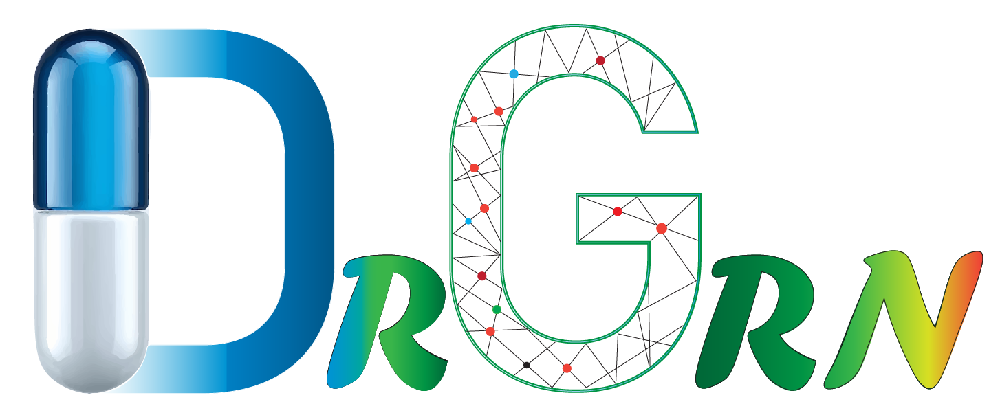

Home
Dataset Information
GRN Construction ▼
Celloracle Human MI
Celloracle KPMP
Regulon Enrichment ▼
Human MI
Aucell Enrichment
Celloracle Decoupler
Home
Back
Home
Back
KPMP Regulon Enrichment
GRN Graph Comparison ▼
Pairwise Comparison
Multiple Graph
TF Candidate Selection
In-Silico Validation
Drug Database Output
GRN Based Drug Repurpossing Pipeline